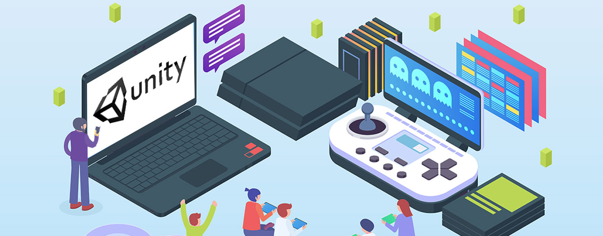

O que faço
Desenvolvimento Web

Desenvolvimento web é o termo utilizado para descrever o desenvolvimento de sites, na Internet ou numa intranet.
O profissional que trabalha desenvolvendo websites pode ser um web designer (desenvolvedor do layout) ou um web developer (desenvolvedor de sistemas).
O termo desenvolvimento web refere-se ao processo de construção e testes de software especifico para a web, com a finalidade de se obter um conjunto de programas, que satisfazem as funções pretendidas, quer em termos de usabilidade dos utilizador ou compatibilidade com outros programas existentes.
O desenvolvimento web pode variar desde simples páginas estáticas a aplicações ricas, comércios eletrônicos ou redes sociais.
O profissional que trabalha desenvolvendo websites pode ser um web designer (desenvolvedor do layout) ou um web developer (desenvolvedor de sistemas).
O termo desenvolvimento web refere-se ao processo de construção e testes de software especifico para a web, com a finalidade de se obter um conjunto de programas, que satisfazem as funções pretendidas, quer em termos de usabilidade dos utilizador ou compatibilidade com outros programas existentes.
O desenvolvimento web pode variar desde simples páginas estáticas a aplicações ricas, comércios eletrônicos ou redes sociais.
Desenvolvimento Mobile

Desenvolvimento de aplicações e sistemas para dispositivos móveis, ou desenvolvimento mobile é toda atividade e processos relativos ao desenvolvimento de software para dispositivos móveis
como PDAs, smartphones e tablets.
Edição de Imagem
A edição de imagem engloba vários processos como retoques nas cores, remover elementos indesejados, ajustar a geometria da imagem, como girar ou recortar a mesmas, entre outros.
Estes processos são normalmente realizados através de software gráfico desenvolvido para o efeito, que através de editores de gráficos vetoriais, editores de gráficos raster e modeladores 3D, possibiliam que os utilizadores manipulem, melhorem e transformem as imagens.
Muitos programas de edição de imagem também são usados para renderizar ou criar arte digital a partir do zero.
Muitos programas de edição de imagem também são usados para renderizar ou criar arte digital a partir do zero.
Edição de Vídeo

A edição de vídeo consiste na manipulação dos frames de um vídeo e é utilizada para reorganizar e retocar as informações presentes nos mesmos, de forma a elaborar filmes, programas de televisão, anúncios e vídeos no geral, da maneira pretendida.
O processo de edição um vídeo pode ser difícil e tedioso, pelo que várias tecnologias foram produzidas para ajudar as pessoas nessa tarefa, como software de edição de vídeo baseado em caneta, criado com o objetivo de oferecer às pessoas uma maneira mais intuitiva e rápida de editar vídeo.
O processo de edição um vídeo pode ser difícil e tedioso, pelo que várias tecnologias foram produzidas para ajudar as pessoas nessa tarefa, como software de edição de vídeo baseado em caneta, criado com o objetivo de oferecer às pessoas uma maneira mais intuitiva e rápida de editar vídeo.
Animação 3D

A animação 3D refere-se ao processo de pegar em objetos digitais e fazê-los ganhar vida, criando a ilusão de que estes se estão a mover através de um espaço tridimensional.
Estes objetos gerados por computador aparecem num ecrã bidimensional, mas são concebidos de forma a imitar os princípios de um mundo 3D, simulando movimento como se fossem um objeto do mundo real.
Estes objetos gerados por computador aparecem num ecrã bidimensional, mas são concebidos de forma a imitar os princípios de um mundo 3D, simulando movimento como se fossem um objeto do mundo real.
Desenvolvimento de Jogos

O desenvolvimento de jogos é a arte de criar jogos e engloba o design, desenvolvimento, teste e lançamento dos mesmos.
Ao criar um jogo, é importante pensar numa história envolvente, na mecânica do jogo, nas recompensas, no envolvimento do jogador e no design dos níveis.
Ao criar um jogo, é importante pensar numa história envolvente, na mecânica do jogo, nas recompensas, no envolvimento do jogador e no design dos níveis.